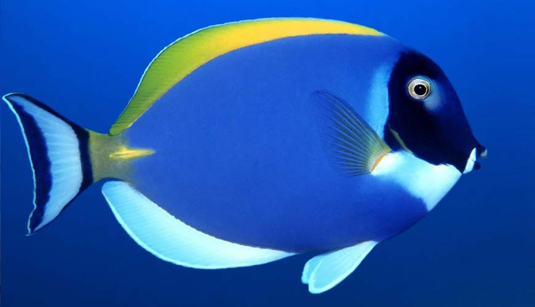

Addons
jQuery plugins implementations for eficient work.
Select2
Select2 is a jQuery based replacement for select boxes. It supports searching, remote data sets, and infinite scrolling of results.
@atd
please... can you add here any select2 example??
my code is bad!Backstretch
a simple jQuery plugin that allows you to add a dynamically-resized, slideshow-capable background image to any page or element.
